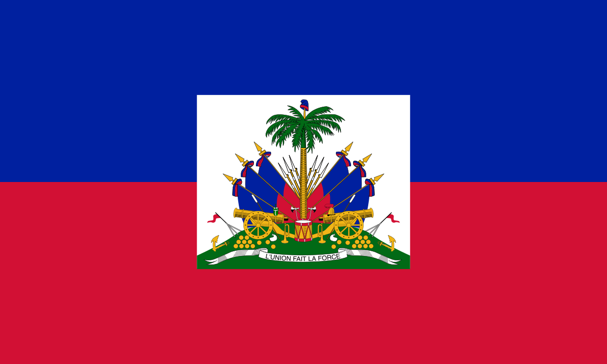
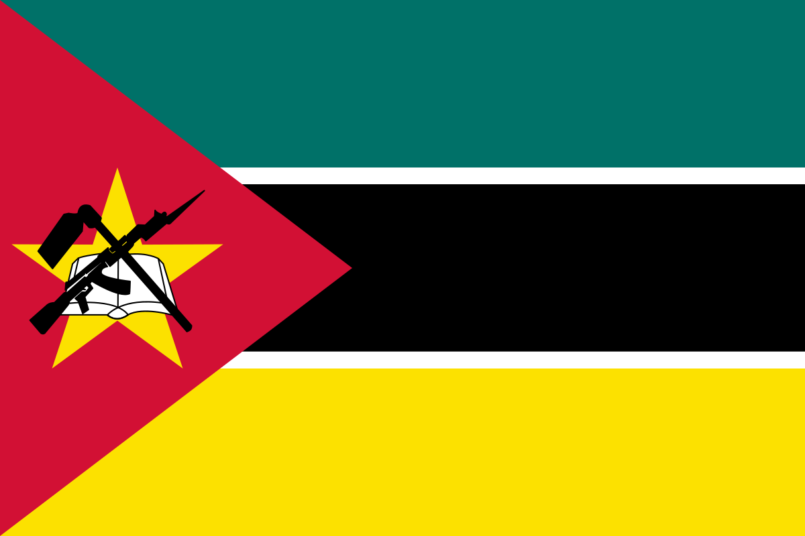

| Global Emissions | Main Contributors | Possible Solutions | Technology Involved | |
|---|---|---|---|---|
| Energy Production | 35% | Coal & Oil Power Plants | Shift to renewable energy | Solar, Wind, Hydropower |
| Gas Power Plants | Carbon Capture, Energy Storage | CCS Technology, Batteries | ||
| Transportation | 14% | Cars, Airplanes | Electric Vehicles, Public Transport | EV Batteries, Hydrogen Fuel |
| Industry | 21% | Cement & Steel Manufacturing | Improve energy efficiency | Carbon Recycling, Green Steel |
| Agriculture | 24% | Deforestation, Livestock | Reforestation, Sustainable Farming | Agroforestry, Biochar |
| Waste Management | 6% | Landfills, Waste Burning | Recycling, Composting | Biogas, Waste-to-Energy |
Greenhouse Gas Emissions
This table highlights the major sources of global emissions, breaking them down by sector. Energy production, transportation, industry, and agriculture contribute significantly to greenhouse gases. The table also includes possible solutions like shifting to renewable energy, adopting electric vehicles, and sustainable farming methods.
| Regions | Major Climate Impact | Environmental Effect | Human Impact | Example |
|---|---|---|---|---|
| Arctic | Ice Melting | Rising Sea Levels | Loss of Coastal Cities | Greenland Ice Sheet Melting |
| Habitat Loss | Extinction of Species | Food Chain Disruptions | Declining Polar Bear Population | |
| Africa | Droughts | Desert Expansion | Crop Failures, Water Crisis | Somalia Water Crisis |
| Asia | Monsoons & Floods | Landslides, Soil Erosion | Displacement of Millions | 2022 Pakistan Floods |
| Europe | Heatwaves | Wildfires, Health Risks | Increase in Heat-related Deaths | 2023 Greece Wildfires |
| Australia | Coral Bleaching | Marine Ecosystem Collapse | Fisheries Loss | Great Barrier Reef Damage |
Climate Change Effects
Different regions experience unique climate impacts, from ice melting in the Arctic to deadly heatwaves in Europe and droughts in Africa. This table outlines how environmental changes lead to severe human consequences like food shortages, loss of biodiversity, and displacement of millions.
| Energy Source | Efficiency | Cost | Environmental Impact | Global Leaders |
|---|---|---|---|---|
| Solar Power | Moderate | Medium | Requires Large Land Areas | China, India, USA |
| Wind Energy | High | Bird Migration Disruptions | Germany, UK, Denmark | |
| Hydropower | High | Affects River Ecosystems | Brazil, Canada, Norway | |
| Geothermal | Minimal Impact | Iceland, Philippines | ||
| Biomass | Moderate | Medium | Risk of Deforestation | Sweden, Finland |
Renewable Energy Sources
Transitioning to clean energy is crucial, but each renewable source has its own advantages and limitations. This table compares solar, wind, hydropower, geothermal, and biomass in terms of efficiency, costs, and environmental impact. It also highlights leading countries investing in these technologies.
| Risk Level | Country | Key Threat | Major Impact | |
|---|---|---|---|---|
| Very High | Bangladesh | Flooding, Cyclones | Displacement of millions, loss of farmland | |
| Chad | Desertification | Drought, Food Shortages | ||
| Haiti |  | Hurricanes, Landslides | Infrastructure collapse, poverty crisis | |
| Mozambique |  | Cyclones, Rising Sea Levels | Homelessness, economic damage | |
| High | Pakistan | Extreme Flooding, Glacial Melting | Urban flooding, loss of homes | |
| India | Heatwaves, Water Shortages | Health Crises | ||
| Philippines | Typhoons, Rising Sea Levels | Coastal Damage | ||
| Moderate | Vietnam |  |
Coastal Erosion, Storm Surges | Threat to agriculture, saltwater intrusion |
| Mexico |  |
Drought, Wildfires | Crop failures, air pollution from fires | |
Countries Most Affected by Climate Change
Some countries face higher climate risks than others, with Bangladesh and Chad experiencing extreme floods and droughts. This table categorizes climate risk levels and describes how governments respond to these threats through climate adaptation strategies, such as disaster relief, sustainable agriculture, and stronger infrastructure.